와인과 셀러 정리
와인을 셀러·층·위치 또는 위치 미지정 상태로 관리합니다. 선반형과 적재형 층을 구성하고, 같은 와인 여러 병도 각각의 위치에 보관할 수 있습니다.
{kind=link}
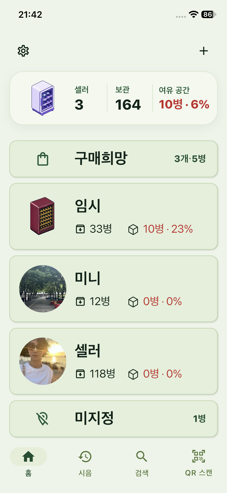
Features
Keep track of where each bottle is, how much remains, and what you thought when you tasted it. Premium-only features are marked below.
프리미엄 표시가 없는 기능은 무료로 사용할 수 있습니다. 무료 이용 범위는 셀러 1개와 현재 보관 중인 와인 20병까지입니다.
와인을 셀러·층·위치 또는 위치 미지정 상태로 관리합니다. 선반형과 적재형 층을 구성하고, 같은 와인 여러 병도 각각의 위치에 보관할 수 있습니다.

층별 화면에서 채운 자리, 빈 자리, 미사용 자리를 구분합니다. 와인 종류에 따른 아이콘으로 배치를 살피고, 자리를 선택하면 목록의 해당 와인을 강조합니다. 선반형 층에서는 와인을 끌어 빈 자리로 옮기거나 두 자리의 와인을 맞바꿀 수 있습니다.
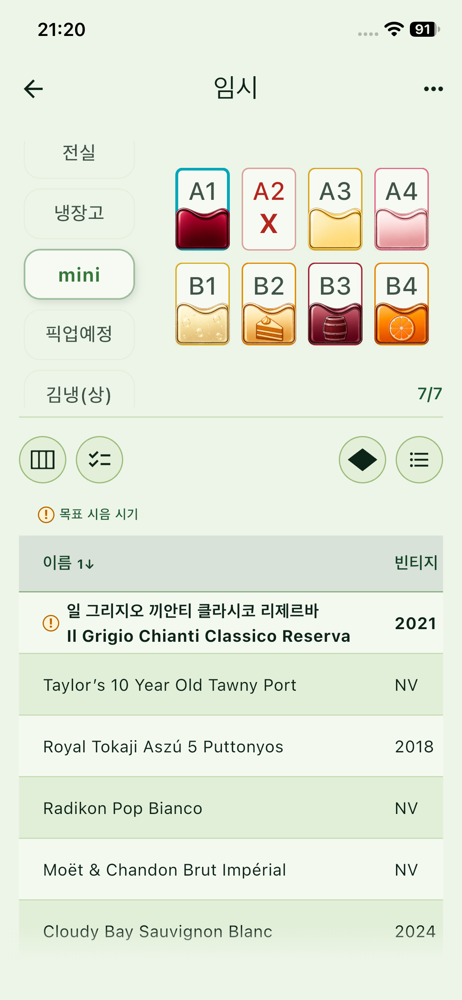
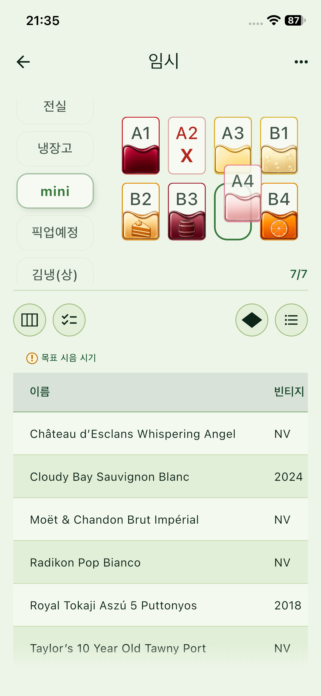
한 병을 조금씩 마시거나 모두 마신 경우를 기록합니다. 한 병·반 병·잔·ml 단위로 마신 양을 입력해 남은 양을 관리하고, 평점·사진·메모를 여러 시음 기록에 남길 수 있습니다.
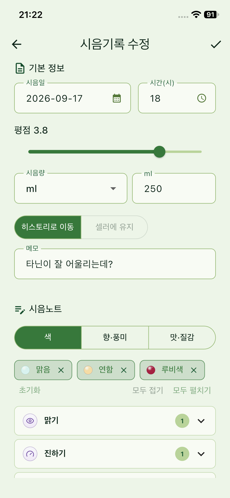
셀러 전체 또는 특정 셀러의 와인을 찾고, 종류·생산 국가·잔량·시음 상태 등으로 결과를 좁힙니다. 개별 병과 같은 와인별 보기를 전환하고 시음 이력도 확인할 수 있습니다.
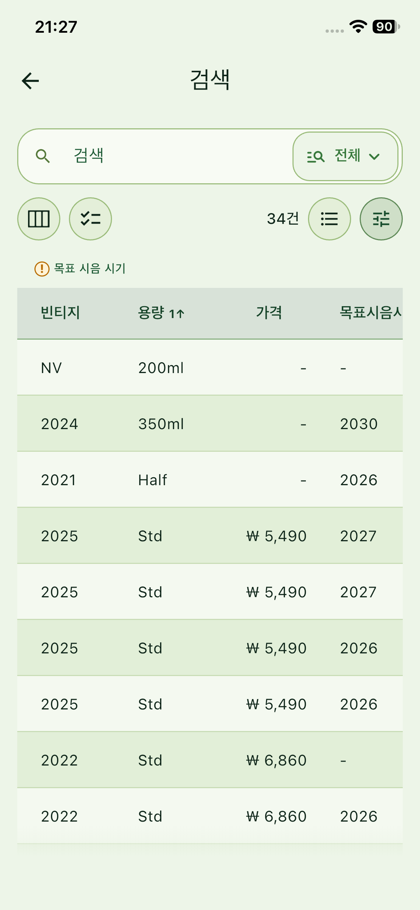
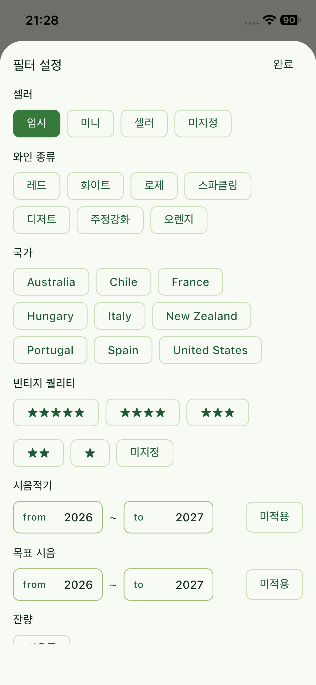
구매하고 싶은 와인을 보유 와인과 별도로 정리합니다. 수량과 후보 구매처를 기록하고, 구매완료 시 해당 정보를 보유 와인 등록에 이어 사용할 수 있습니다.
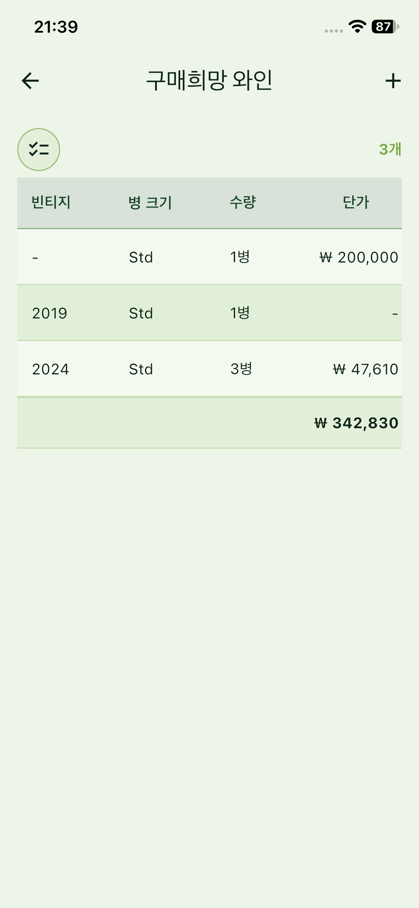
와인과 시음 기록을 CSV 양식으로 한꺼번에 가져오거나 내보냅니다. CSV에는 사진 파일이 포함되지 않습니다.
와인 정보 조회용 질문이나 선택한 여러 와인에 관한 추천·페어링 질문의 초안을 복사합니다. 앱이 AI 답변을 직접 생성하지 않으며, 평소 사용하는 AI에 붙여넣어 활용할 수 있습니다.
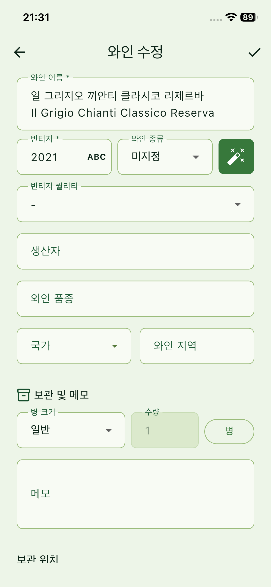
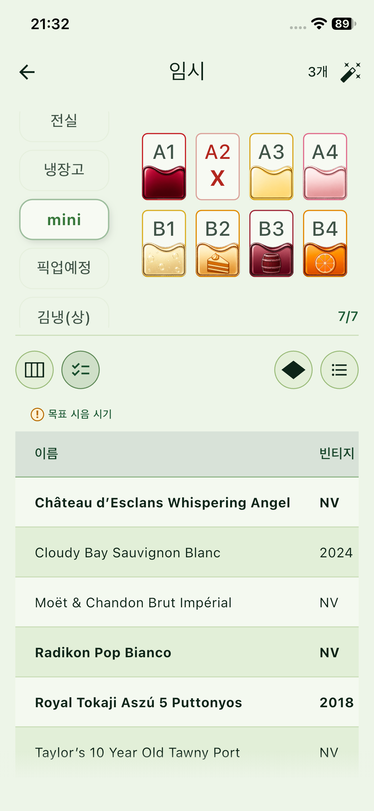
무료 이용 범위인 셀러 1개와 보관 와인 20병의 수량 제한을 해제해 여러 셀러와 더 많은 병을 관리합니다.
와인·층·셀러의 QR 라벨을 만들고 인쇄할 수 있습니다. 라벨을 스캔해 관련 와인과 보관 정보로 빠르게 이동합니다.
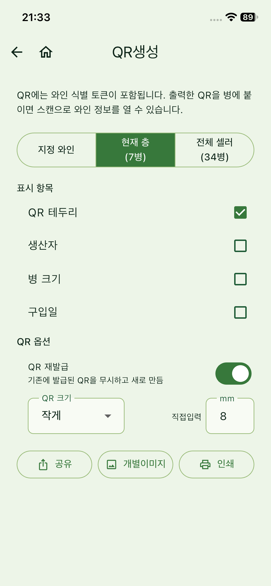
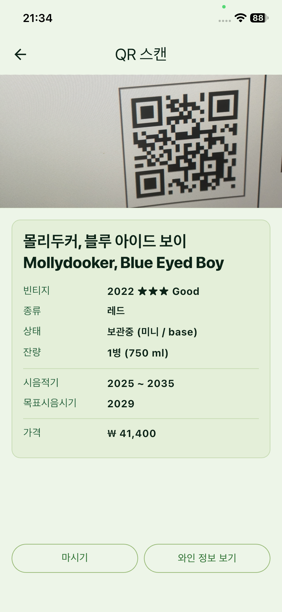
앱 데이터를 파일로 백업하고 필요할 때 복구합니다. 사진 포함 여부를 선택할 수 있으며, 백업 파일은 사용자가 직접 보관합니다. 서버 자동 백업이나 기기 간 동기화는 제공하지 않습니다.
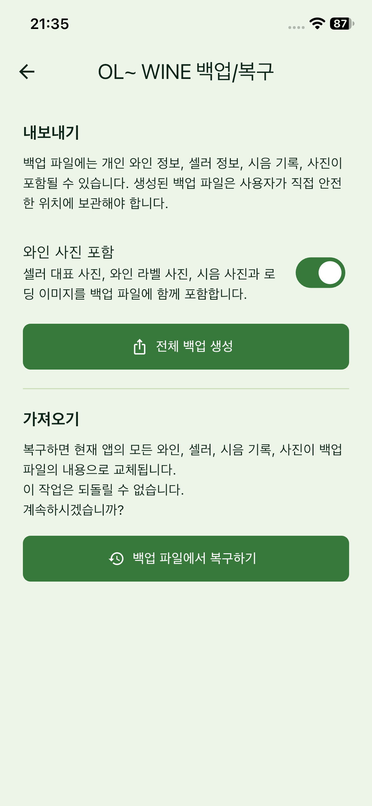
Features without a Premium badge are available for free. The free tier supports one cellar and up to 20 currently stored bottles.
The screenshots below show the Korean app interface.
Organize bottles by cellar, layer, and position, or leave their location unassigned. Configure shelf or stacked layers and give each bottle its own location, even when several bottles are the same wine.
See occupied, empty, and unavailable positions by layer. Wine-type icons make the layout easier to scan, and selecting a position highlights its wine in the list. In shelf layers, drag a bottle to an empty position or swap two occupied positions.
Record a small pour or a finished bottle. Enter the amount consumed as a bottle, half bottle, glass, or milliliters, track what remains, and keep ratings, photos, and notes across multiple tastings.
Find wines across all cellars or within one cellar, then narrow results by type, production country, remaining amount, and tasting status. Switch between individual bottles and grouped wines, and revisit tasting history.
Keep wines you want to buy separate from your collection. Record quantities and possible shops, then carry their details into stored-wine registration when a purchase is complete.
Import or export wine and tasting records in batches using CSV templates. CSV files do not include photo files.
Copy a draft question for wine information or for recommendations and pairings based on selected wines. The app does not generate AI answers; paste the prompt into the AI you already use.
Remove the free tier's limit of one cellar and 20 currently stored bottles to manage more cellars and wines.
Create and print QR labels for wines, layers, and cellars. Scan a label to quickly open the related wine or storage information.
Back up app data to a file and restore it when needed. Choose whether to include photos and store the backup file yourself. Automatic server backup and cross-device sync are not provided.
{kind=link}
{kind=link}
{kind=link}
{kind=link}
{kind=link}
{kind=link}
{kind=link}
{kind=link}
{kind=link}
{kind=link}
{kind=link}